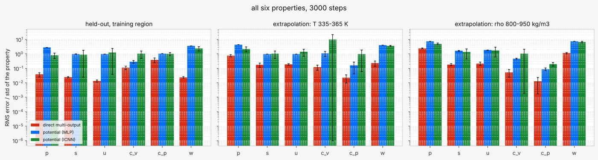
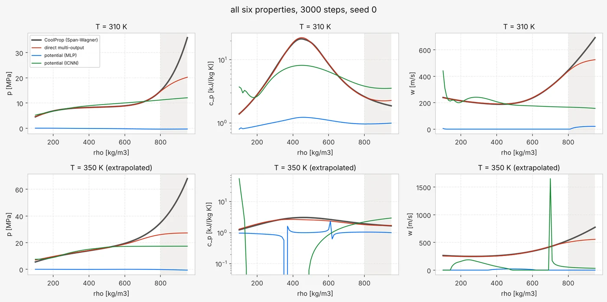

Uma rede neural que devolve pressão, entropia, calor específico e velocidade do som, cada uma pela sua própria saída, pode ser muito precisa e ainda assim inútil: nada no treino obriga as derivadas que ligam essas grandezas a continuarem valendo. Perto do ponto crítico, onde as propriedades variam rápido, essa diferença decide se o resultado pode entrar num solver.
O experimento
Mesmos dados (CoolProp sobre a equação de Span & Wagner), mesmos passos de treino, mesmas sementes. Três modelos: rede direta, com uma saída por propriedade; rede de potencial, que aprende a energia de Helmholtz e tira cada propriedade por derivada; e a versão com convexidade na entrada (ICNN, Amos e outros, 2017). A avaliação cobre a região de treino, duas extrapolações (mais quente e mais denso) e seis identidades termodinâmicas.
O número que separa os dois
Erro RMS normalizado pelo desvio da propriedade, na região de treino: 0,0995 para a rede direta, 1,61 para a de potencial e 1,24 para a versão com convexidade. A direta é cerca de 16 vezes mais precisa, com um sexto do tempo de treino (21 s por semente, contra 85 s e 213 s).
Nas identidades, o resultado se inverte. Violação relativa no percentil 95: a rede direta viola a relação de Maxwell em 41%, a dependência de c_v com a densidade em 1.100% e a relação de Mayer em 240%. A de potencial fica em 0,0028% na Maxwell e 0,0003% na de c_v. A exceção é a velocidade do som, onde o potencial sem convexidade é pior que a rede direta, 540% contra 88%, e é justamente o que a versão com convexidade corrige: 0,001%.


Por que o erro não é o critério
Um solver que recebe calor específico e velocidade do som de fontes que não conversam entre si não converge, ou converge para o que não devia. A rede direta otimiza cada propriedade contra o dado, e nada no treino impede as derivadas de se contradizerem: por isso ela acerta cada número e erra a relação entre eles. Na rede de potencial toda propriedade sai da mesma função, então as identidades valem por construção, e o que sobra é o resíduo do ajuste.
O preço está do outro lado, e é honesto dizer qual é. O potencial treina de quatro a dez vezes mais devagar, e fora do domínio ele desestabiliza: na extrapolação mais quente, só 33% dos pontos ficaram estáveis, contra 100% da rede direta. Com o triplo de passos, e mais sementes, a diferença de erro na região de treino deixa de ser significativa, o que sugere que a vantagem da rede direta é de orçamento, não de arquitetura.

O que isso decide
Para interpolar propriedades num pós-processamento, onde ninguém vai derivar nada, a rede direta é a escolha. Para alimentar um solver de CFD, a de potencial, com o erro declarado ao lado. O experimento não elege um vencedor: ele põe preço em cada um, que é o que faltava para escolher.